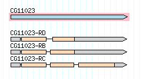

Introduction¶
gffutils is a Python package for working with GFF and GTF files in a hierarchical manner. It
allows operations which would be complicated or time-consuming using
a text-file-only approach.
Below is a short demonstration of gffutils. For the full documentation,
see Table of Contents.
Example file¶
Consider the first gene on chromosome 2L in Drosophila melanogaster, CG11023. Here is a graphical representation of this gene’s three alternative transcripts, from FlyBase :
gffutils ships with the GFF annotation of this gene, downloaded from
release 5.54 of FlyBase.
We’ll be using it to describe some features of gffutils, because it
contains just enough complexity to be representative of a real-world,
genome-wide GFF file.
Let’s look at what the file contains:
>>> import gffutils
>>> fn = gffutils.example_filename('intro_docs_example.gff')
>>> print(open(fn).read())
2L FlyBase gene 7529 9484 . + . ID=FBgn0031208;Name=CG11023;Ontology_term=SO:0000010,SO:0000087,GO:0016929,GO:0016926,GO:0006508;Dbxref=FlyBase:FBan0011023,FlyBase_Annotation_IDs:CG11023,GB_protein:ACZ94128,GB_protein:AAO41164,GB:AI944728,GB:AJ564667,GB_protein:CAD92822,GB:BF495604,UniProt/TrEMBL:Q86BM6,INTERPRO:IPR003653,GB_protein:AGB92323,UniProt/TrEMBL:M9PAY1,OrthoDB7_Drosophila:EOG796K1P,OrthoDB7_Diptera:EOG7X1604,EntrezGene:33155,UniProt/TrEMBL:E1JHP8,UniProt/TrEMBL:Q6KEV3,OrthoDB7_Insecta:EOG7Q8QM7,OrthoDB7_Arthropoda:EOG7R5K68,OrthoDB7_Metazoa:EOG7D59MP,InterologFinder:33155,BIOGRID:59420,FlyAtlas:CG11023-RA,GenomeRNAi:33155;gbunit=AE014134;derived_computed_cyto=21A5-21A5
2L FlyBase mRNA 7529 9484 . + . ID=FBtr0300689;Name=CG11023-RB;Parent=FBgn0031208;Dbxref=REFSEQ:NM_001169365,FlyBase_Annotation_IDs:CG11023-RB;score_text=Strongly Supported;score=11
2L FlyBase mRNA 7529 9484 . + . ID=FBtr0300690;Name=CG11023-RC;Parent=FBgn0031208;Dbxref=REFSEQ:NM_175941,FlyBase_Annotation_IDs:CG11023-RC;score_text=Strongly Supported;score=15
2L FlyBase mRNA 7529 9484 . + . ID=FBtr0330654;Name=CG11023-RD;Parent=FBgn0031208;Dbxref=FlyBase_Annotation_IDs:CG11023-RD,REFSEQ:NM_001272857;score_text=Strongly Supported;score=11
2L FlyBase exon 7529 8116 . + . Name=CG11023:1;Parent=FBtr0300689,FBtr0300690,FBtr0330654;parent_type=mRNA
2L FlyBase five_prime_UTR 7529 7679 . + . Name=CG11023-u5;Parent=FBtr0300689,FBtr0300690;parent_type=mRNA
2L FlyBase five_prime_UTR 7529 7679 . + . Name=CG11023-u5;Parent=FBtr0330654;parent_type=mRNA
2L FlyBase CDS 7680 8116 . + 0 Name=CG11023-cds;Parent=FBtr0300689,FBtr0300690;parent_type=mRNA
2L FlyBase CDS 7680 8116 . + 0 Name=CG11023-cds;Parent=FBtr0330654;parent_type=mRNA
2L FlyBase intron 8117 8228 . + . Name=CG11023-in;Parent=FBtr0330654;parent_type=mRNA
2L FlyBase intron 8117 8192 . + . Name=CG11023-in;Parent=FBtr0300689;parent_type=mRNA
2L FlyBase intron 8117 8192 . + . Name=CG11023-in;Parent=FBtr0300690;parent_type=mRNA
2L FlyBase exon 8193 9484 . + . Name=CG11023:3;Parent=FBtr0300689;parent_type=mRNA
2L FlyBase CDS 8193 8610 . + 1 Name=CG11023-cds;Parent=FBtr0300689;parent_type=mRNA
2L FlyBase CDS 8193 8589 . + 1 Name=CG11023-cds;Parent=FBtr0300690;parent_type=mRNA
2L FlyBase exon 8193 8589 . + . Name=CG11023:2;Parent=FBtr0300690;parent_type=mRNA
2L FlyBase exon 8229 9484 . + . Name=CG11023:4;Parent=FBtr0330654;parent_type=mRNA
2L FlyBase CDS 8229 8610 . + 1 Name=CG11023-cds;Parent=FBtr0330654;parent_type=mRNA
2L FlyBase intron 8590 8667 . + . Name=CG11023-in;Parent=FBtr0300690;parent_type=mRNA
2L FlyBase three_prime_UTR 8611 9484 . + . Name=CG11023-u3;Parent=FBtr0300689;parent_type=mRNA
2L FlyBase three_prime_UTR 8611 9484 . + . Name=CG11023-u3;Parent=FBtr0330654;parent_type=mRNA
2L FlyBase three_prime_UTR 9277 9484 . + . Name=CG11023-u3;Parent=FBtr0300690;parent_type=mRNA
2L FlyBase exon 8668 9484 . + . Name=CG11023:5;Parent=FBtr0300690;parent_type=mRNA
2L FlyBase CDS 8668 9276 . + 0 Name=CG11023-cds;Parent=FBtr0300690;parent_type=mRNA
While this is a (relatively) simple gene, the annotation looks quite complex. In no particular order, some comments about this annotation:
The gene has lots of attributes (last column), which would be nice to be able to access from Python.
The gene and mRNA features have “ID” attributes, while UTRs, exons, CDSs, and introns only have “Name” attributes, e.g.:
gene: ID=FBgn0031208;Name=CG11023... mRNA: ID=FBtr0300689;Name=CG11023-RB... exon: Name=CG11023:1...
The “Name” attributes of UTRs, exons, CDSs, and introns contain the “Name” attribute of the parent gene, followed by some extra info. For exons, it’s a colon and a number; for introns its “-in”, and so on. But the “Parent” mRNA is indicated with the mRNA’s “ID” attribute, e.g.,:
exon: Name=CG11023:3;Parent=FBtr0300689;
For routine tasks like counting reads in exons (say, with HTSeq), it would be nice to be able to add a “gene_id” attribute to exons. That is, change:
exon: Name=CG11023:3;Parent=FBtr0300689;
to:
exon: Name=CG11023:3;Parent=FBtr0300689;gene_id=FBgn0031208;
Then, we could use
htseq-countlike this:htseq-count --type=exon --idattr=gene_id reads.sam fixed_annotation.gff
UTRs, exons, CDSs, and introns have the same name for different features. For example, these two introns have different coordinates and have different mRNA parents, yet have the same “Name” attribute:
2L FlyBase intron 8117 8228 . + . Name=CG11023-in;Parent=FBtr0330654;parent_type=mRNA 2L FlyBase intron 8117 8192 . + . Name=CG11023-in;Parent=FBtr0300689;parent_type=mRNA
It would be nice to have unique IDs for these features so we could differentiate them for, say, counting the unique introns of a gene or generating a file of splice junctions.
Create the database¶
The first step to working with gffutils is to import the file into
a local sqlite3 file-based database. The gffutils.create_db() function
is used for this, and it takes many optional arguments for configuring how to
interpret your GFF or GTF file.
>>> db = gffutils.create_db(fn, dbfn='test.db', force=True, keep_order=True,
... merge_strategy='merge', sort_attribute_values=True)
Here, force=True will overwrite any existing database, keep_order=True
will maintain the order of the attributes (ID, Name, Parent, and so on), and
sort_attribute_values=True will ensure the values of each attribute are
always sorted. These latter two settings are necessary here for this
documentation (which undergoes automated testing) to have predictable output,
but in general you can gain a speedup by using the default keep_order=False
and sort_attributes_order=False.
If your input file follows the GFF or GTF file format specifications, this is
all you need to create a database. But real-world files don’t always
completely adhere to the format specifications. So gffutils provides lots
of configuration options to tailor the pre-processing to your particular file
– see Importing data into a database for more details, and Examples for more
practical examples.
Use the database¶
Once the database has been created, downstream code can connect to it simply by:
>>> import gffutils
>>> db = gffutils.FeatureDB('test.db', keep_order=True)
Features are accessed by name:
>>> gene = db['FBgn0031208']
>>> gene
<Feature gene (2L:7529-9484[+]) at 0x...>
Inspect fields from the GFF line:
>>> gene.start
7529
>>> gene.end
9484
Attributes are stored in the attributes dictionary. Values are always in
a list, even if there’s only one item:
>>> gene.attributes['Name']
['CG11023']
Attributes can also be accessed from the Feature object itself, to
save some typing:
>>> gene['Name']
['CG11023']
Printing a Feature reproduces the original GFF line as faithfully as
possible. See the Dialects section for more details on how this is
handled and configured.
>>> print(gene)
2L FlyBase gene 7529 9484 . + . ID=FBgn0031208;Name=CG11023;Ontology_term=SO:0000010,SO:0000087,GO:0016929,GO:0016926,GO:0006508;Dbxref=FlyBase:FBan0011023,FlyBase_Annotation_IDs:CG11023,GB_protein:ACZ94128,GB_protein:AAO41164,GB:AI944728,GB:AJ564667,GB_protein:CAD92822,GB:BF495604,UniProt/TrEMBL:Q86BM6,INTERPRO:IPR003653,GB_protein:AGB92323,UniProt/TrEMBL:M9PAY1,OrthoDB7_Drosophila:EOG796K1P,OrthoDB7_Diptera:EOG7X1604,EntrezGene:33155,UniProt/TrEMBL:E1JHP8,UniProt/TrEMBL:Q6KEV3,OrthoDB7_Insecta:EOG7Q8QM7,OrthoDB7_Arthropoda:EOG7R5K68,OrthoDB7_Metazoa:EOG7D59MP,InterologFinder:33155,BIOGRID:59420,FlyAtlas:CG11023-RA,GenomeRNAi:33155;gbunit=AE014134;derived_computed_cyto=21A5-21A5
Get all the mRNAs for a gene:
>>> for i in db.children(gene, featuretype='mRNA', order_by='start'):
... print(i)
2L FlyBase mRNA 7529 9484 . + . ID=FBtr0300689;Name=CG11023-RB;Dbxref=REFSEQ:NM_001169365,FlyBase_Annotation_IDs:CG11023-RB;Parent=FBgn0031208;score_text=Strongly Supported;score=11
2L FlyBase mRNA 7529 9484 . + . ID=FBtr0300690;Name=CG11023-RC;Dbxref=REFSEQ:NM_175941,FlyBase_Annotation_IDs:CG11023-RC;Parent=FBgn0031208;score_text=Strongly Supported;score=15
2L FlyBase mRNA 7529 9484 . + . ID=FBtr0330654;Name=CG11023-RD;Dbxref=FlyBase_Annotation_IDs:CG11023-RD,REFSEQ:NM_001272857;Parent=FBgn0031208;score_text=Strongly Supported;score=11
Get all the exons for a gene:
>>> for i in db.children(gene, featuretype='exon', order_by='start'):
... print(i)
2L FlyBase exon 7529 8116 . + . Name=CG11023:1;Parent=FBtr0300689,FBtr0300690,FBtr0330654;parent_type=mRNA
2L FlyBase exon 8193 9484 . + . Name=CG11023:3;Parent=FBtr0300689;parent_type=mRNA
2L FlyBase exon 8193 8589 . + . Name=CG11023:2;Parent=FBtr0300690;parent_type=mRNA
2L FlyBase exon 8229 9484 . + . Name=CG11023:4;Parent=FBtr0330654;parent_type=mRNA
2L FlyBase exon 8668 9484 . + . Name=CG11023:5;Parent=FBtr0300690;parent_type=mRNA
Does this gene have any constitutive exons (exons found in every alternative
transcript)? This is an example of something that would be difficult to do
using only standard text file processing tools, and demonstrates the usefulness
of the gffutils:
>>> mRNA_count = len(list(db.children(gene, featuretype='mRNA')))
>>> constitutive_exons = []
>>> for exon in db.features_of_type('exon', order_by='start'):
... parents = db.parents(exon, featuretype='mRNA')
... if len(list(parents)) == mRNA_count:
... constitutive_exons.append(exon)
>>> print(constitutive_exons)
[<Feature exon (2L:7529-8116[+]) at 0x...>]
Retrieve entries by genomic coordinates, which uses the UCSC binning strategy:
>>> list(db.region(region=('2L', 9277, 10000), completely_within=True))
[<Feature three_prime_UTR (2L:9277-9484[+]) at 0x...>]
Retrieve UTRs that overlap the gene (note that a feature can be provided as the coordinates):
>>> for UTR in db.region(gene, featuretype=['three_prime_UTR', 'five_prime_UTR']):
... print(UTR)
2L FlyBase five_prime_UTR 7529 7679 . + . Name=CG11023-u5;Parent=FBtr0300689,FBtr0300690;parent_type=mRNA
2L FlyBase five_prime_UTR 7529 7679 . + . Name=CG11023-u5;Parent=FBtr0330654;parent_type=mRNA
2L FlyBase three_prime_UTR 8611 9484 . + . Name=CG11023-u3;Parent=FBtr0300689;parent_type=mRNA
2L FlyBase three_prime_UTR 8611 9484 . + . Name=CG11023-u3;Parent=FBtr0330654;parent_type=mRNA
2L FlyBase three_prime_UTR 9277 9484 . + . Name=CG11023-u3;Parent=FBtr0300690;parent_type=mRNA
Now let’s illustrate a problem in the GFF file as it is currently formatted by trying to get the consitutive 5’UTRs in the same way we got the constitutive exons above:
>>> constitutive_5UTRs = []
>>> for utr in db.features_of_type('five_prime_UTR', order_by='start'):
... parents = db.parents(utr, featuretype='mRNA')
... if len(list(parents)) == mRNA_count:
... constitutive_5UTRs.append(utr)
>>> print(constitutive_5UTRs)
[]
Yikes! What happened? This is because by default, each line in the GFF file is treated as a unique feature. From this perspective, the first 5’UTR has two parents, and the second 5’UTR has one parent – there are zero 5’UTRs with all three transcripts as parents.
What we’d really like to do is to merge the features that have identical IDs and coordinates. Specifically, we’d like to have these two features:
2L FlyBase five_prime_UTR 7529 7679 . + . Name=CG11023-u5;Parent=FBtr0300689,FBtr0300690;parent_type=mRNA
2L FlyBase five_prime_UTR 7529 7679 . + . Name=CG11023-u5;Parent=FBtr0330654;parent_type=mRNA
become a single feature:
2L FlyBase five_prime_UTR 7529 7679 . + . Name=CG11023-u5;Parent=FBtr0300689,FBtr0300690,FBtr0330654;parent_type=mRNA
Similarly, we’d like these three 3’UTRs:
2L FlyBase three_prime_UTR 8611 9484 . + . Name=CG11023-u3;Parent=FBtr0300689;parent_type=mRNA
2L FlyBase three_prime_UTR 8611 9484 . + . Name=CG11023-u3;Parent=FBtr0330654;parent_type=mRNA
2L FlyBase three_prime_UTR 9277 9484 . + . Name=CG11023-u3;Parent=FBtr0300690;parent_type=mRNA
to become two (merging only the first two because they have identical coordinates):
2L FlyBase three_prime_UTR 8611 9484 . + . Name=CG11023-u3;Parent=FBtr0300689,FBtr0330654;parent_type=mRNA
2L FlyBase three_prime_UTR 9277 9484 . + . Name=CG11023-u3;Parent=FBtr0300690;parent_type=mRNA
In order to do this, we need to change how features are loaded into the
database by using merge_strategy=True and id_spec=['ID', 'Name']. You can
read more about exactly what these arguments do, and other ways of tweaking the
import, at Database IDs. But for now, let’s see what happens:
>>> db2 = gffutils.create_db(fn, dbfn='test.db', force=True, keep_order=True,
... sort_attribute_values=True,
... merge_strategy='merge',
... id_spec=['ID', 'Name'])
>>> for utr in db2.features_of_type('five_prime_UTR', order_by='start'):
... parents = db2.parents(utr, featuretype='mRNA')
... if len(list(parents)) == mRNA_count:
... constitutive_5UTRs.append(utr)
>>> print(constitutive_5UTRs)
[<Feature five_prime_UTR (2L:7529-7679[+]) at 0x...>]
Let’s look at all the 5’UTRs in the database to see how the merge strategy affected them:
>>> for i in db2.features_of_type('five_prime_UTR'):
...
... print(i)
2L FlyBase five_prime_UTR 7529 7679 . + . Name=CG11023-u5;Parent=FBtr0300689,FBtr0300690,FBtr0330654;parent_type=mRNA
Aha! A single 5’UTR. What about 3’UTRs?
>>> for i in db2.features_of_type('three_prime_UTR'):
... print(i)
2L FlyBase three_prime_UTR 8611 9484 . + . Name=CG11023-u3;Parent=FBtr0300689,FBtr0330654;parent_type=mRNA
2L FlyBase three_prime_UTR 9277 9484 . + . Name=CG11023-u3;Parent=FBtr0300690;parent_type=mRNA
>>> for i in db2.features_of_type('intron'):
... print(i)
2L FlyBase intron 8117 8228 . + . Name=CG11023-in;Parent=FBtr0330654;parent_type=mRNA
2L FlyBase intron 8117 8192 . + . Name=CG11023-in;Parent=FBtr0300689,FBtr0300690;parent_type=mRNA
2L FlyBase intron 8590 8667 . + . Name=CG11023-in;Parent=FBtr0300690;parent_type=mRNA